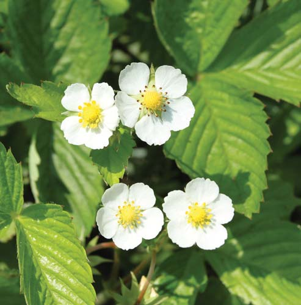

L
Andrew Syred/Science Photo Library
728
as plantas asignan muchos recursos a la producción de hojas que con frecuencia son de vida corta. Cada año, una gran hoja de arce, por ejemplo, puede producir 47 m 2 de hojas, que pueden pesar más de 113 kg. El costo metabólico de producir tantas hojas es elevado, pero necesario. Dicho de manera simple: las hojas son esenciales para la supervivencia del árbol, de modo que las plantas deben invertir en su producción. En la mayoría de las plantas vasculares, las hojas son los órganos principales para recolectar de manera efectiva energía solar para convertirla en energía química. Esto es: las hojas recolectan la luz solar necesaria para la fotosíntesis , el proceso biológico que convierte la energía radiante en la energía química de las moléculas de carbohidratos. Las plantas usan dichas moléculas como materiales de partida para sintetizar todos los otros compuestos orgánicos y como combustible para brindar energía para el metabolismo. Durante un solo verano, las hojas de un árbol de arce fi jarán alrededor de 454 kg de dióxido de carbono (CO 2 ) en compuestos orgánicos. La estructura de una hoja está notablemente adaptada para su función principal de fotosíntesis. La mayoría de las hojas son delgadas y planas, una forma que permite la absorción óptima de energía luminosa
34 Estructura y función de la hoja
Colorido MEB del interior de una hoja de espinaca. El holgado orden de las células internas en la espinaca ( Spinacia oleracea ) optimiza la difusión de los materiales puros necesarios, como el dióxido de carbono y el agua, hacia las células fotosintéticas.
CONCEPTOS CLAVE
34.1 La estructura de la hoja refl eja su función primaria de fotosíntesis. 34.2 La apertura y el cierre de estomas afecta la disponibilidad de dióxido de carbono en el ciclo diario de la fotosíntesis. 34.3 La transpiración, la pérdida de vapor de agua de la superfi cie de la hoja, evita que la hoja se caliente en exceso y promueve el transporte de agua en la planta. La gutación es la exudación de agua líquida desde los márgenes de la hoja. 34.4 La abscisión de la hoja es la remoción estacional de las hojas deciduas. 34.5 Algunas hojas están modifi cadas para funciones especiales, además de fotosíntesis y transpiración.
Estructura y función de la hoja 729
axilares nunca se desarrollan en la base de los foliolos. Además, los foliolos de una hoja compuesta se encuentran en un solo plano (es posible acostar una hoja compuesta plana sobre una mesa), mientras que las hojas simples por lo general no están ordenadas en un plano sobre un tallo. Las hojas están ordenadas en el tallo en una de tres formas posibles ( FIGURA 34-2b ). Las plantas como hayas y nogales tienen un arreglo foliar alternado , con una hoja en cada nodo , el área del tallo donde se unen una o más hojas. En un arreglo foliar opuesto , como ocurre en arces y fresnos, en cada nodo crecen dos hojas. En un arreglo foliar en espiral , como en los árboles catalpa, en cada nodo crecen tres o más hojas. Las láminas foliares pueden poseer venación paralela , en la que las venas primarias, hebras de tejido vascular, corren aproximadamente paralelas unas a otras (por lo general característica de las monocotiledóneas), o venación reticulada , en la que las venas se ramifi can de tal forma que parecen una red (generalmente característica de las eudicotiledóneas; FI-
GURA 34-2c ). 1 La venación reticulada puede ser reticular pinnada , donde las venas principales ramifi can en sucesión a lo largo de toda la longitud de la nervadura media (vena principal o central de una hoja), o reticular palmada , con muchas venas principales que radian desde un punto. Los científi cos botánicos usan avanzadas técnicas moleculares para estudiar la base genética de varios aspectos del crecimiento y del desarrollo vegetal, incluida la forma de la hoja. Muchos de los genes bajo estudio codifi can factores de transcripción. Como estudió en el capítulo 14, los factores de transcripción son proteínas que enlazan ADN que regulan la síntesis de ARN a partir de una plantilla de ADN. Un ejemplo
y la efi ciente difusión interna de gases como CO 2 y O 2 . Como resultado de su arreglo ordenado en el tallo, las hojas capturan efi cientemente los rayos del Sol con un mínimo de “interferencia” de hojas vecinas. Las hojas forman un intrincado mosaico verde, bañado en luz solar y gases atmosféricos. Para controlar la pérdida de agua, una delgada capa transparente de cera cubre la superfi cie de la hoja. Tales adaptaciones estructurales están comprometidas entre las necesidades de competencia, y algunas características que optimizan la fotosíntesis para promover la pérdida de agua. Por ejemplo, las plantas tienen poros diminutos que permiten el intercambio de gases para la fotosíntesis, pero estas aberturas también dejan escapar el vapor de agua hacia la atmósfera. Por ende, la estructura de la hoja representa una “negociación” entre la fotosíntesis y la conservación de agua. En este capítulo se examinará la forma y la función de la hoja. La forma de la hoja es enormemente variable, y miles de diferentes formas de hoja evolucionaron a lo largo de millones de años. A pesar de esta diversidad, la mayoría de las hojas “funcionan” de la misma forma, y sus estructuras internas (vea fotografía) apoyan esta semejanza en función.
34.1 FORMA Y ESTRUCTURA DE LA HOJA
OBJETIVOS DE APRENDIZAJE
1 Discutir la variación en forma de hoja, incluidas las hojas simples frente a las compuestas, el orden de las hojas en el tallo y los patrones de venación. 2 Describir los principales tejidos de la hoja (epidermis, tejido fundamental fotosintético, xilema y fl oema) y marcarlos en un diagrama de la sección transversal de una hoja. 3 Comparar la anatomía foliar en eudicotiledóneas y monocotiledóneas. 4 Relacionar la estructura foliar con su función de fotosíntesis.
Las hojas de follaje son los más variables de los órganos vegetales, tanto que los biólogos vegetales crearon terminología específi ca para describir sus formas, márgenes (bordes), patrones de venas y la forma en que se adhieren a los tallos. Dado que cada hoja es característica de la especie en la que crece, muchas plantas pueden identifi carse por sus hojas solas. Las hojas pueden ser redondas, con forma de aguja, en forma de escama, cilíndricas, con forma de corazón o de abanico, o delgadas y estrechas. Varían en tamaño desde las que pertenecen a la palmera rafi a ( Raphia ruffi a ), cuyas hojas con frecuencia crecen a más de 20 m de largo, hasta las de las Wolffi a , cuyas hojas son tan pequeñas que 16 de ellas puestas extremo con extremo sólo medirían 2.5 cm. La ancha porción plana de una hoja es la lámina ; el pedúnculo que une la lámina al tallo es el peciolo . Algunas hojas también tienen estípulas , que son protuberancias parecidas a hojas usualmente presentes en pares en la base del peciolo ( FIGURA 34-1 ). Algunas hojas no tienen peciolos (esto es: las láminas se adhieren directamente al tallo) o estípulas; se dice que las hojas sin peciolo son sésiles . Las hojas pueden ser simples (tener una sola lámina) o compuestas (tener una lámina foliar dividida en dos o más foliolos) ( FIGURA 34-2a ). En ocasiones es difícil decir si una planta formó una hoja compuesta o un tallo pequeño tiene muchas hojas simples. Una forma sencilla para determinar si una planta tiene hojas simples o compuestas es buscar yemas axilares, llamadas así porque cada una se desarrolla en la axila (el ángulo entre el tallo y el peciolo) de una hoja. Las yemas axilares se forman en la base de una hoja, ya sea simple o compuesta. Sin embargo, las yemas
Lámina
Venas
Peciolo
Estípulas Tallo
Yema axilar
FIGURA 34-1 Partes de una hoja Una hoja de geranio consiste en una lámina, un peciolo y dos estípulas en la base de la hoja. Observe la yema axilar en la axila de la hoja.
1 Recuerde que las plantas con fl ores, el punto central de este capítulo, se dividen en dos grupos principales, llamados de manera informal eudicotiledóneas y monocotiledóneas (vea el capítulo 28). Los ejemplos de eudicotiledóneas incluyen frijol, petunias, robles, cerezos, rosas y cabeza de dragón; las monocotiledóneas incluyen maíz, lirios, céspedes, palmeras, tulipanes, orquídeas y plátanos.
730 Capítulo 34
mis. La epidermis superior cubre la superfi cie superior, y la epidermis inferior cubre la superfi cie inferior. La mayoría de las células en estas capas carecen de cloroplastos y son relativamente transparentes. Una interesante característica de las células epidérmicas foliares es que la pared celular que da frente al ambiente exterior es un poco más gruesa que la pared celular que da frente hacia adentro. Este grosor adicional puede ofrecer a la planta protección adicional contra lesiones o pérdida de agua. Puesto que las hojas tienen una gran área superfi cial expuesta a la atmósfera, la pérdida de agua por evaporación desde la superfi cie de la hoja es inevitable. Sin embargo, células epidérmicas segregan una capa cerosa, la cutícula , que reduce la pérdida de agua de sus paredes exteriores (vea la tabla 33-4). La cutícula, que consiste principalmente de la
excitante de este tipo de investigación se publicó recientemente en la revista Science ( FIGURA 34-3 ). Con el tiempo, investigaciones como ésta ayudarán a los botánicos a comprender los papeles de todos los genes involucrados en el desarrollo vegetal, una importante meta de la biología de sistemas.
La estructura de la hoja está adaptada para maximizar la absorción de luz
La hoja es un órgano complejo compuesto de muchos tejidos organizados para optimizar la fotosíntesis ( FIGURA 34-4 ). La lámina foliar tiene superfi cies superior e inferior, y cada una consiste en una capa de epider-
Compuesta pinnada Compuesta palmada Simple
Reticular palmado Reticular pinado Paralelo
Opuesta En espiral Alternada
Roble blanco californiano ( Quercus lobata )
Haya americana ( Fagus grandifolia ) Arce azucarero ( Acer saccharum ) Catalpa sureño ( Catalpa bignonioides )
Fresno blanco ( Fraxinus americana )
Castaño de Ohio ( Aesculus glabra )
Césped de Bermudas ( Cynodon dactylon ) Sauce negro ( Salix nigra ) Liquidámbar ( Liquidambar styraciflua )
Forma foliar: simple y compuesta.
Orden de hojas en un tallo.
Patrones de venación.
FIGURA 34-2 Morfología foliar Todas las hojas mostradas son árboles eudicotiledóneos leñosos de América del Norte, excepto el césped de Bermudas, que es una monocotiledónea herbácea nativa de Europa y Asia.
Estructura y función de la hoja 731
EXPERIMENTO CLAVE
PREGUNTA: ¿Qué controles moleculares determinan si una hoja en desarrollo se volverá simple o compuesta?
EXPERIMENTO: Genes NAM/CUC (no meristemo apical/cotiledón con forma de taza) se clonaron y manipularon genéticamente en cuatro plantas con fl ores con parentesco distante y que por lo común producen hojas compuestas: Aquilegia caerulea (colombina), Solanum lycopersicum (tomate), Cardamine hirsuta (mastuerzo amargo) y Pisum sativum (guisante de jardín). Ya se sabía que los genes NAM/CUC codifi can factores de transcripción vegetal involucrados en el establecimiento y función del meristemo apical de brote.
1 2 3 4
RESULTADOS Y CONCLUSIONES: Los científi cos europeos Thomas Blein, Patrick Laufs y colaboradores reportaron en la revista Science , en 2008, que la temporización del silenciamiento genético de los genes NAM/CUC tenía el potencial de producir estructuras foliares menos elaboradas más simples. Si una hoja joven en el meristemo apical de brote de una colombina ya había desarrollado foliolos profundamente lobulados, silenciando los genes NAM/CUC que no afectaría su futuro desarrollo (hoja 1). Los márgenes foliares de las hojas 2 y 3 se desarrollaron con menos lóbulos porque los genes NAM/CUC se silenciaron antes de que hubiera ocurrido mucho desarrollo foliar. En la hoja 4 el silenciamiento muy temprano resultó en una hoja simple con un margen completo. Simplifi caciones foliares similares ocurrieron debido al tiempo en que se silenciaron los genes NAM/CUC en las hojas en desarrollo de tomate, mastuerzo amargo y guisante de jardín.
Fuente: Blein, T. et al. “A conserved molecular framework for compound leaf development”. Science , vol. 322, 19 de diciembre de 2008. (La fotografía se tomó de la fi gura 2 en la página 1837.)
FIGURA 34-3 Controles moleculares y desarrollo de la forma de la hoja
Las hojas contienen los tres sistemas tisulares que se encuentran en las plantas: el tejido epidérmico, representado por la epidermis superior e inferior; el tejido fundamental, representado por el mesófi lo; y el tejido vascular, representado por el xilema y el fl oema en las venas.
Vena (haz vascular)
Vaina del haz
Cutícula
Xilema
Floema
Células oclusivas (acompañantes) Estoma
Estoma
Epidermis superior
Epidermis inferior
Espacio de aire
Mesófilo esponjoso
Mesófilo en empalizada
FIGURA 34-4 Animada Tejidos en una lámina foliar típica Una epidermis superior y una epidermis inferior cubren la lámina. El tejido fundamental fotosintético, llamado mesófi lo , con frecuencia se organiza en empalizada y en capas esponjosas. Las venas ramifi can a lo largo del mesófi lo.
PUNTO CLAVE
732 Capítulo 34
mente diferentes de otras células epidérmicas. Las células subsidiarias ofrecen un depósito de agua y iones que se mueven adentro y fuera de las células oclusivas mientras cambian de forma durante la abertura y cierre de la estoma (lo que se estudia más adelante en el capítulo). El tejido fundamental fotosintético de la hoja, llamado mesófi lo (del griego meso , “la mitad de”; y phyll , “hoja”), está en medio de la epidermis superior y la epidermis inferior. Las células del mesófi lo, que son células parenquimatosas (vea el capítulo 33) empacadas con cloroplastos, están ordenadas holgadamente, con muchos espacios de aire entre ellas que facilitan el intercambio de gases. Estos espacios de aire intercelular representan hasta el 70% del volumen de la hoja. En muchas plantas, el mesófi lo se divide en dos subcapas. Hacia la epidermis superior, las células de columna se apilan estrechamente en una capa llamada mesófi lo en empalizada . En la porción inferior, las células están ordenadas más fl ojas e irregularmente en una capa llamada mesófi lo esponjoso . Las dos capas tienen diferentes funciones. El mesófi lo en empalizada está especializado para la captura de luz y es el principal sitio de fotosíntesis en la hoja. La fotosíntesis también ocurre en el mesófi lo esponjoso, pero la principal función del mesófi lo esponjoso es permitir la difusión de gases, particularmente de CO 2 , dentro de la hoja. El mesófi lo en empalizada puede estar organizado en una, dos, tres o incluso más capas de células. La presencia de capas adicionales es al menos en parte una adaptación a condiciones ambientales. Las hojas expuestas a luz solar directa contienen más capas de mesófi lo en empalizada que las hojas a la sombra en la misma planta. En luz solar directa, la luz es sufi cientemente fuerte para penetrar de manera efectiva múltiples capas de mesófi lo en empalizada, lo que permite a todas las capas realizar fotosíntesis de modo efi ciente. Las venas, o haces vasculares , de una hoja se extienden a través del mesófi lo. La ramifi cación es extensa, y ninguna célula de mesófi lo está a más de dos o tres células de distancia de una vena. Por lo tanto, el lento proceso de difusión no limita el movimiento de los recursos necesarios entre las células de mesófi lo y las venas. Cada vena contiene dos tipos de tejido vascular: xilema y fl oema. El xilema , que conduce agua y minerales disueltos (nutrientes inorgánicos), por lo general se ubica en la parte superior de una vena, hacia la epidermis superior. El fl oema , que conduce azúcares disueltos, generalmente está confi nado a la parte inferior de una vena. Una o más capas de células no vasculares rodean las venas más grandes y constituyen la vaina del haz . Las vainas de haz están compuestas de células de parénquima o esclerénquima (vea el capítulo 33). Con frecuencia, las vainas del haz tienen columnas de soporte, llamadas extensiones de la vaina del haz , que se extienden a través del mesófi lo desde la epidermis superior hasta la epidermis inferior ( FIGURA 34-6 ). Las extensiones de la vaina del haz pueden componerse con células de parénquima, colénquima o esclerénquima.
La estructura foliar difi ere en eudicotiledóneas y monocotiledóneas
Cada hoja eudicotiledónea por lo general se compone de una ancha lámina aplanada y un peciolo. Como se mencionó antes, las hojas eudicotiledóneas usualmente tienen venación reticulada. En contraste, muchas hojas monocotiledóneas carecen de peciolo; son estrechas y la base de la hoja con frecuencia se enrolla en torno al tallo para formar una vaina. La venación paralela es característica de las hojas monocotiledóneas. Las eudicotiledóneas y ciertas monocotiledóneas también difi eren en anatomía foliar interna ( FIGURA 34-7 ). Aunque la mayoría de las eudicotiledóneas y monocotiledóneas tienen capas tanto en empalizada como esponjosas, algunas monocotiledóneas (maíz y otros céspedes) no tienen mesófi lo diferenciado en capas distintas en empalizada y es-
sustancia cerosa cutina , varía en grosor en diferentes plantas, en parte como resultado de condiciones ambientales. Como podría esperar, las hojas de las plantas adaptadas a los climas calurosos y secos tienen cutículas extremadamente gruesas. Más aún: la epidermis superior expuesta (y más caliente) de una hoja por lo general tiene una cutícula más gruesa que su epidermis inferior sombreada (y más fría). La epidermis de muchas hojas está cubierta con muchas estructuras con forma de pelo llamados tricomas , que tienen varias funciones (vea la tabla 33-4). Los tricomas de algunas plantas ayudan a reducir la pérdida de agua de la superfi cie de la hoja al retener una capa de aire húmedo junto a la hoja y al refl ejar la luz solar, lo que en consecuencia protege la planta del sobrecalentamiento. Algunos tricomas segregan irritantes que causan comezón para desalentar a los herbívoros , animales que se alimentan de plantas. Además, para un insecto es difícil caminar sobre o comerse una hoja cubierta con tricomas. Otros tricomas excretan sales en exceso absorbidas de un suelo salino. La epidermis de la hoja contiene diminutas aberturas, o estomas , para el intercambio de gases entre las células de la hoja y el ambiente; las estomas están igualmente espaciados para optimizar este intercambio de gases. Cada estoma está fl anqueado por dos células oclusivas (acompañantes) epidérmicas especializadas, que son responsables de abrir y cerrar las estomas ( FIGURA 34-5 ). Las células oclusivas por lo general son las únicas células epidérmicas con cloroplastos. Los estomas son especialmente numerosos sobre la epidermis inferior de las hojas con orientación horizontal (un promedio de alrededor de 100 estomas por milímetro cuadrado) y en muchas especies sólo se ubican en la superfi cie inferior. La epidermis inferior de las hojas de manzana ( Malus sylvestris ), por ejemplo, tiene casi 400 estomas por milímetro cuadrado, mientras que la epidermis superior no tiene ninguna. Esta adaptación reduce la pérdida de agua porque las estomas en la epidermis inferior están blindadas de la luz solar directa y por lo tanto son más fríos que los de la epidermis superior. En contraste, las hojas fl otantes de las plantas acuáticas, como los lirios acuáticos, tienen estomas sólo sobre la epidermis superior. Las células oclusivas están asociadas con células epidérmicas especiales llamadas células subsidiarias que con frecuencia son estructural-
25 μ m
Células oclusivas
Estoma Célula epidérmica
Células subsidiarias
Dwight R. Kuhn
FIGURA 34-5 Estomas MO de un estoma abierto de la epidermis foliar de una Zebrina pendula . Observe los cloroplastos presentes en las células oclusivas y la pared interior más gruesa de cada célula oclusiva.
Estructura y función de la hoja 733
ponjosa. Puesto que las eudicotiledóneas tienen venas reticuladas, una sección transversal de una lámina de eudicotiledónea con frecuencia muestra venas tanto en las vistas transversales como longitudinales. En una sección transversal de una hoja monocotiledónea, en contraste, el patrón de venación en paralelo produce venas igualmente espaciadas, todas las cuales aparecen en sección transversal. También se presentan diferencias entre las células oclusivas en eudicotiledóneas y ciertas hojas monocotiledóneas ( FIGURA 34-8 ). Las células oclusivas de las eudicotiledóneas y muchas monocotiledóneas tienen forma como de riñón. Otras hojas monocotiledóneas (las de céspedes, juncos y juncias) tienen células oclusivas con forma de pesas de gimnasia. Estas diferencias estructurales afectan la forma en que las células se hinchan o encogen para abrir o cerrar el estoma.
La estructura de la hoja se relaciona con su función
¿Cómo se relaciona la estructura de una hoja con su función principal de fotosíntesis? La epidermis de una hoja es relativamente transparente y permite que la luz penetre al interior de la hoja, donde se ubica el tejido fundamental fotosintético, el mesófi lo. Las estomas, que están en la superfi cie de las hojas, permiten el intercambio de gases entre la atmósfera y los tejidos internos de la hoja. El CO 2 , un material bruto de la fotosíntesis, se difunde hacia la hoja a través de estomas. Otros gases, incluidos contaminantes del aire, también entran al interior de la hoja vía los estomas. El agua requerida para la fotosíntesis se obtiene del suelo y se transporta en el xilema hacia la hoja, donde se difunde hacia el mesófi lo y humedece las superfi cies de las células mesófi las. El arreglo holgado de las células mesófi las, con espacios de aire entre células, permite la rápida di-
Nervadura media
Epidermis superior
Extensión de vaina del haz
Vaina del haz
Extensión de la vaina del haz Epidermis inferior 250 μ m
Phil Gates/Biological Photo Service
FIGURA 34-6 Extensión de vaina de haz MO de la nervadura media de trigo ( Triticum aestivum ) en sección transversal. Observe las extensiones de la vaina de haz en la epidermis superior e inferior. Fotografi ada con microscopia de fl uorescencia.
▲
Xilema Floema
Epidermis inferior
Mesófilo esponjoso
Vista longitudinal de la nervadura
Mesófilo en empalizada
Epidermis superior
Espacio de aire
- Hoja eudicotiledónea. MO de parte de la sección transversal de una hoja de alheña ( Ligustrum vulgare ). El mesófilo tiene secciones distintivas en empalizada y esponjosa.
Nervadura media
250 μ m
Ed Reschke/Peter Arnold, Inc.
Nervadura media
Xilema Floema
Epidermis superior
Mesófilo
Epidermis inferior
Estoma
Espacio de aire
- Hoja monocotiledónea. MO de parte de la sección transversal de una hoja de maíz ( Zea mays ). Las hojas de maíz carecen de regiones distintivas de mesófilo en empalizada y esponjosa.
Célula de vaina de haz
25 μ m
Dwight R. Kuhn
FIGURA 34-7 Secciones transversales de hojas eudicotiledónea y monocotiledónea
▲
734 Capítulo 34
las coníferas son siempre verdes, lo que signifi ca que pierden hojas a lo largo de todo el año en lugar de durante ciertas estaciones. Las coníferas dominan una gran porción de área terrestre de la Tierra, particularmente en los bosques y montañas septentrionales. Las hojas de la mayoría de las coníferas son agujas cerosas. Sus agujas tienen adaptaciones estructurales que les ayudan a sobrevivir al invierno, la parte más seca del año. (El invierno es árido incluso en áreas de nieve pesada porque las raíces no pueden absorber agua del suelo cuando la temperatura del suelo es muy baja). De hecho, muchas de las características estructurales de las agujas también se encuentran en muchas plantas del desierto. La FIGURA 34-9 muestra una sección transversal de una aguja de pino. Observe que la aguja es un poco más gruesa en lugar de ser delgada y con forma de lámina. El relativo grosor de las agujas, que resulta en menos área superfi cial expuesta al aire, reduce la pérdida de agua. Otras características que ayudan a conservar el agua incluyen la gruesa cutícula cerosa y estomas hundidas; esto permite el intercambio de gases mientras se minimiza la pérdida de agua. Por ende, las agujas ayudan a las coníferas a tolerar los vientos secos que ocurren durante el invierno ( seco se refi ere aquí a baja humedad relativa). Con el calentamiento de la primavera, el agua del suelo nuevamente se vuelve disponible, y las agujas reanudan de manera rápida la fotosíntesis.
Repaso
■ ¿Cómo se adaptan las hojas para conservar agua?
■ ¿Cómo se llama el tejido fundamental fotosintético de una hoja? ¿Cuáles son sus dos subcapas?
■ ¿Cuáles son los dos tipos de tejido vascular en el haz vascular? ¿Cuál tejido vascular generalmente se ubica en la parte superior del haz vascular?
■ ¿Cómo se organiza la hoja para entregar los materiales brutos y remover los productos de la fotosíntesis?
34.2 APERTURA Y CIERRE DE ESTOMAS
OBJETIVOS DE APRENDIZAJE
5 Explicar el papel de la luz azul en la apertura de las estomas. 6 Destacar los cambios fi siológicos que acompañan la apertura y cierre de las estomas.
Las estomas son poros ajustables que por lo general se abren durante el día, cuando se requiere CO 2 para la fotosíntesis, y se cierran en la noche, cuando la fotosíntesis se detiene (vea la sección acerca de la fotosíntesis CAM en el capítulo 9 para una interesante excepción). La apertura y cierre de estomas están controlados por cambios en la forma de las dos células oclusivas que rodean cada poro. La forma de las células oclusivas está determinada por su rigidez. Cuando el agua se mueve hacia las células oclusivas desde células no oclusivas circundantes, las células oclusivas se vuelven turgentes (se hinchan) y doblan, lo que produce un poro. Cuando el agua sale de las células oclusivas, se vuelven fl ácidas (fl ojas)
fusión de CO 2 hacia las superfi cies celulares del mesófi lo; ahí se disuelve en una película de agua antes de difundirse hacia las células. Las venas no sólo suministran agua y minerales (de las raíces, mediante el xilema) al tejido fundamental fotosintético, sino también transporta (en el fl oema) azúcar disuelta producida durante la fotosíntesis hacia todas las partes de la planta. Las vainas del haz y las extensiones de la vaina del haz asociadas con las venas brindan sostén adicional para evitar que la hoja, que estructuralmente es más débil debido a la gran cantidad de espacio de aire en el mesófi lo, colapse bajo su propio peso.
Las hojas están adaptadas para ayudar a una planta a sobrevivir en su ambiente
La estructura foliar refl eja el ambiente al que está adaptada una planta particular. Aunque tanto las plantas acuáticas como las adaptadas a condiciones secas realizan fotosíntesis y tienen la misma anatomía foliar básica, sus hojas están modifi cadas para permitirles sobrevivir a diferentes condiciones ambientales. Las hojas de los lirios acuáticos tienen peciolos sufi cientemente grandes para permitir a la lámina fl otar sobre la superfi cie del agua. Los grandes espacios de aire en el mesófi lo brindan fl otabilidad a la lámina que fl ota. Los peciolos y otras partes sumergidas tienen un sistema interno de ductos de aire; el oxígeno se mueve a través de dichos ductos desde las hojas fl otantes hacia las raíces y tallos subterráneos, que viven en un ambiente aireado de manera defi ciente. Las coníferas son un importante grupo de árboles y arbustos leñosos que incluye pinos, píceas, abetos, secuoyas y cedros. 2 La mayoría de
Abierta Cerrada
Abierta Cerrada
Células oclusivas
Poro (ostiolo)
Células oclusivas Células subsidiarias
Células subsidiarias
Algunas células oclusivas monocotiledóneas son estrechas en el centro y más gruesas en cada extremo.
Las células oclusivas de las eudicotiledóneas y de muchas monocotiledóneas tienen forma de frijol.
Poro
FIGURA 34-8 Variación en células oclusivas Las células guardianas están asociadas con células epidérmicas llamadas células subsidiarias.
2 Como se estudia en el capítulo 28, las coníferas son gimnospermas, uno de los dos grupos de plantas con semillas (el otro grupo es el de las plantas con fl ores, o angiospermas). A diferencia de las plantas con fl ores, cuyas semillas están encerradas en frutos, las coníferas tienen semillas “desnudas” en las escamas de los conos femeninos.
Estructura y función de la hoja 735
concentración) en los dos lados de la membrana plasmática de la célula oclusiva. El gradiente electroquímico resultante de H + dirige la difusión facilitada de gran cantidad de iones de potasio hacia las células oclusivas. Este movimiento ocurre a través de canales de potasio activados por voltaje , que se abren cuando se alcanza cierto voltaje (diferencia en carga entre los dos lados de la membrana plasmática de la célula oclusiva). Este movimiento de iones de potasio se ha medido experimentalmente con la técnica de fi jación de membrana (en inglés: patch clamp ) en la que los investigadores fi jan la punta de una micropipeta a un diminuto pedazo de membrana que contiene un solo canal iónico y luego miden el fl ujo de iones a través de dicho canal entre el citoplasma y la disolución en la micropipeta. (Es interesante que, en los animales, los canales iónicos activados por voltaje se encuentren en las membranas plasmáticas de las células nerviosas y estén involucrados en la transmisión de impulsos neuronales). Los iones cloruro también llegan a las células oclusivas a través de canales iónicos en la membrana plasmática de dichas células. Los iones cloruro y malato con carga negativa ayudan a equilibrar eléctricamente los iones de potasio con carga positiva. Los iones de potasio, cloruro y malato se acumulan en las vacuolas de las células oclusivas, lo que en consecuencia aumenta la concentración de soluto en las vacuolas. Usted recordará de la discusión de ósmosis en el capítulo 5 que, cuando una célula tiene una concentración de soluto mayor que la de las células circundantes, el agua fl uye hacia la célula. Por lo tanto, el agua entra por ósmosis a las células oclusivas desde células epidérmicas circundantes. La creciente turgencia de las células oclusivas cambia su forma, porque las engrosadas paredes celulares internas no se expanden tanto como las paredes exteriores, de modo que la estoma se abre.
luz azul activa bombas de protones ¡ bomba de protón saca H +
de las células oclusivas ¡ K + y Cl − se difunden hacia las células
oclusivas a través de canales iónicos activados por voltaje ¡ el
agua se difunde por ósmosis hacia las células oclusivas ¡ las células
oclusivas cambian de forma y el estoma se abre
y colapsan una con otra, lo que cierra el poro. ¿Qué hace que el agua se mueve adentro y afuera de las células oclusivas?
La luz azul activa la apertura de las estomas
Datos de numerosos experimentos y observaciones comienzan a explicar las complejidades de los movimientos de las estomas. Comience con la apertura de estomas, que ocurre cuando la planta detecta luz desde que el Sol se eleva. Usted ya sabe que la luz es una forma de energía; las plantas absorben luz y la convierten en energía química en el proceso de fotosíntesis. Sin embargo, la luz también es una importante señal ambiental para las plantas; esto es: la luz proporciona a las plantas información acerca de su ambiente, que usan para modifi car varias actividades en los niveles molecular y celular. En la apertura de estomas y muchas otras respuestas vegetales, la luz azul , que tiene longitudes de onda de 400 a 500 nm, es una señal ambiental. Cualquier respuesta vegetal a la luz debe involucrar un pigmento , una molécula que absorbe la luz, antes de la inducción de una respuesta biológica particular. Los datos como las respuestas de los estomas a diferentes colores de luz sugieren que el pigmento involucrado en la apertura y cierre de estomas es amarillo (los pigmentos amarillos absorben luz azul intensamente). Se cree que el pigmento amarillo está ubicado en las células oclusivas, probablemente en sus membranas plasmáticas. En la FIGURA 34-10 , la luz azul, que es un componente de la luz solar, dispara la activación de bombas de protones, ubicadas en la membrana plasmática de la célula oclusiva. La luz azul también activa la síntesis de ácido málico y la hidrólisis (separación) de almidón (se estudia más adelante). Las bombas de protones usan energía de ATP para transportar de manera activa protones (H + ) fuera de las células oclusivas. El H + bombeado se forma cuando el ácido málico producido en las células oclusivas se ioniza para formar H + y iones de malato con carga negativa. Conforme las bombas de protones en las membranas plasmáticas de las células oclusivas transportan protones fuera de las células oclusivas, se forma un gradiente electroquímico (esto es: una diferencia de carga y
FIGURA 34-9 MO de una aguja de pino en sección transversal La gruesa cutícula cerosa y las estomas hundidas son dos adaptaciones estructurales que permiten al pino ( Pinus ) conservar sus agujas a lo largo del invierno.
Ducto de resina
Endodermis
Xilema
Floema
Célula de mesófilo (célula parenquimatosa fotosintética)
Haz vascular
250 μ m
Epidermis y cutícula Células oclusivas de estomas hundidas
John D. Cunningham/Visuals Unlimited
736 Capítulo 34
tomas están bajo control hormonal, en particular de la hormona vegetal ácido abscísico (vea la tabla 38-1). La apertura y cierre de estomas también están regulados por un reloj biológico interno que en alguna forma mide el tiempo. Por ejemplo, después de que las plantas se colocan en oscuridad continua, sus estomas siguen abriéndose y cerrándose más o menos a la misma hora cada día. Tales ritmos biológicos que siguen un ciclo aproximado de 24 horas se conocen como ritmos circadianos . En el capítulo 38 se proporcionan otros ejemplos de ritmos circadianos.
Repaso
■ ¿Cómo la luz azul dispara la apertura de estomas?
■ ¿Qué cambios fi siológicos ocurren en las células oclusivas durante la apertura de estomas? ¿Durante el cierre de estomas?
34.3 TRANSPIRACIÓN Y GUTACIÓN
OBJETIVOS DE APRENDIZAJE
7 Discutir la transpiración y sus efectos sobre las plantas. 8 Distinguir entre transpiración y gutación.
A pesar de las adaptaciones de las hojas como la cutícula, aproximadamente 99% del agua que una planta absorbe del suelo se pierde por evaporación de las hojas y, en menor medida, los tallos. La pérdida de vapor de agua por evaporación de las partes aéreas de la planta se llama transpiración . La cutícula es extremadamente efectiva en la reducción de pérdida de agua por transpiración. Se estima que sólo del 1% al 3% del agua
Las estomas se cierran cerca del anochecer, mas no mediante una inversión exacta del proceso de apertura. Estudios recientes demostraron que la concentración de iones de potasio en las células oclusivas disminuye de manera lenta durante el día. Sin embargo, la concentración de sacarosa, otra sustancia osmóticamente activa, aumenta durante el día (y mantiene el poro abierto) y luego disminuye lentamente conforme se aproxima la noche. Esta sacarosa proviene de la hidrólisis del almidón, que es un polisacárido, que se almacena en los cloroplastos de la célula oclusiva. Conforme se aproxima la noche, la concentración de sacarosa en las células oclusivas declina conforme la sacarosa se convierte de nuevo en almidón (que es osmóticamente inactivo), el agua sale por ósmosis, las células oclusivas pierden su turgencia y el poro cierra. Para resumir: diferentes mecanismos parecen regular la apertura y cierre de estomas. La ingesta de iones potasio y cloruro se asocia principalmente con la apertura de estomas, y el declive en concentración de sacarosa se asocia sobre todo con el cierre de estomas. En el capítulo 38 se estudian otras respuestas de las plantas a la luz azul.
Factores adicionales afectan la apertura y el cierre de estomas
Aunque luz y oscuridad disparan la apertura y cierre de estomas, también están involucrados otros factores ambientales, incluida la concentración de CO 2 . Una baja concentración de CO 2 en la hoja induce la apertura de la estoma, incluso en la oscuridad. Los efectos de la luz y la concentración de CO 2 sobre la apertura de estomas están interrelacionados. La fotosíntesis, que ocurre en presencia de luz, reduce la concentración interna de CO 2 en la hoja, lo que dispara la apertura de la estoma. Otro factor ambiental que afecta la apertura y el cierre de estomas es la tensión del agua. Durante una sequía prolongada, las estomas permanecen cerradas, incluso durante el día. La apertura y cierre de es-
Un gradiente de protones (H + ) dirige la acumulación de iones osmóticamente activos (K + y Cl − ) en las células oclusivas.
H + H + K + K +
Cl Cl H 2 O H 2 O
Luz azul activa bombas de protones. Protones se bombean fuera de las células oclusivas, lo que forma un gradiente electroquímico.
Iones potasio entran a las células oclusivas a través de canales iónicos activados por voltaje.
Iones cloruro también entran a las células oclusivas a través de canales iónicos.
Agua entra a las células oclusivas mediante ósmosis, y la estoma se abre.
1 2 3 4 5
FIGURA 34-10 Mecanismo de apertura de estomas
PUNTO CLAVE


Estructura y función de la hoja 737
La transpiración es una parte importante del ciclo hidrológico , en el que el agua circula del océano y la tierra hacia la atmósfera y luego regresa al océano y la tierra (vea la fi gura 55-11). Como resultado de la transpiración, el agua se evapora de las hojas y tallos para formar nubes en la atmósfera. Por ende, la transpiración a la larga resulta en precipitación. Como es de esperar, los árboles del bosque liberan cantidades sustanciales de humedad al aire mediante la transpiración. Investigadores determinaron que al menos la mitad de la lluvia que cae en la cuenca del Amazonas se recicla una y otra vez por transpiración y precipitación.
Algunas plantas exudan agua líquida
Muchas hojas tienen estructuras especiales en las terminaciones venosas a través de las cuales el agua líquida literalmente se fuerza a salir. Esta pérdida de agua líquida, conocida como gutación , ocurre cuando la transpiración es mínima y la humedad disponible en el suelo es alta. La gutación usualmente ocurre en plantas de bajo crecimiento durante la noche, porque las estomas están cerradas, pero el agua sigue moviéndose hacia las raíces por ósmosis. En ocasiones, temprano por la mañana, las personas confunden con rocío las gotitas de agua formadas por gutación sobre los márgenes de las hojas ( FIGURA 34-12 ). A diferencia del rocío, que se condensa del aire durante una noche fría, las gotas de gutación vienen del interior de la planta. (El mecanismo de la gutación se estudia en el capítulo 35).
Repaso
■ ¿Qué es transpiración? ¿Cómo se relaciona la estructura de una hoja con la transpiración?
■ ¿Cómo factores ambientales (luz solar, temperatura, humedad y viento) infl uyen sobre la tasa de transpiración?
■ ¿Cómo difi ere la gutación de la transpiración?
perdida por una planta pasa en forma directa a través de la cutícula. La mayor parte de la transpiración ocurre a través de estomas abiertas. Los numerosos poros de estoma que son tan efectivos en el intercambio de gases por fotosíntesis también ofrecen aperturas a través de las cuales escapa vapor de agua. Además, el holgado arreglo de las células de mesófi lo esponjoso proporciona una mayor área superfi cial dentro de la hoja de donde puede evaporarse el agua. Muchos factores ambientales infl uyen en la tasa de transpiración. Más agua se pierde de las superfi cies de la planta a temperaturas más altas. La luz aumenta la tasa de transpiración, en parte porque dispara la apertura de estomas y en parte porque aumenta la temperatura de la hoja. El viento y el aire seco aumentan la transpiración, pero el aire húmedo la disminuye porque el aire ya está saturado, o casi saturado, con vapor de agua. Aunque la transpiración puede parecer un desperdicio, en particular para los granjeros de las tierras áridas, es un proceso esencial que tiene valor adaptativo. La transpiración es responsable del movimiento de agua en las plantas, y sin ella el agua no llegaría a las hojas desde el suelo (vea la discusión del modelo tensión-cohesión en el capítulo 35). La gran cantidad de agua que las plantas pierden por transpiración puede brindar algunos benefi cios adicionales. La transpiración, como la sudoración en los humanos, enfría las hojas y los tallos. Cuando el agua pasa de un estado líquido a vapor, absorbe gran cantidad de calor. Cuando las moléculas de agua salen de la planta como vapor de agua, llevan consigo este calor. Por ende, el efecto de enfriamiento de la transpiración puede evitar que las hojas se sobrecalienten, particularmente en luz solar directa. Otro benefi cio de la transpiración es que distribuye minerales esenciales a través de la planta. El agua que transpira una planta inicialmente se absorbe del suelo, donde está presente no como agua pura sino como una disolución diluida de sales minerales disueltas. Después, el agua y los minerales disueltos se transportan en el xilema a toda la planta, incluidas sus hojas. El agua se mueve desde la planta hacia la atmósfera durante la transpiración, pero los minerales permanecen en los tejidos de la planta. Muchos de estos minerales se requieren para el crecimiento de la planta. Se ha sugerido que la transpiración permite a una planta ingerir sufi ciente agua para brindar sufi cientes minerales esenciales; también se sugiere que las plantas no pueden satisfacer sus requisitos minerales si la tasa de transpiración no es sufi cientemente alta. Sin embargo, no hay duda de que, bajo ciertas circunstancias, la transpiración excesiva puede ser dañina para una planta. En los calurosos días de verano, las plantas frecuentemente pierden más agua por transpiración de la que ingieren del suelo. Sus células experimentan pérdida de turgencia y las plantas se marchitan ( FIGURA 34-11 ). Si una planta puede recuperarse durante la noche, debido a la combinación de transpiración mínima (recuerde que las estomas están cerradas) y absorción de agua del suelo, se dice que la planta experimentó marchitación temporal . La mayoría de las plantas se recuperan de la marchitez temporal sin efectos nocivos. No obstante, en casos de sequía prolongada, el suelo puede no contener sufi ciente humedad para permitir la recuperación de la marchitez. Una planta que no puede recuperarse se dice que está permanentemente marchita y morirá. FIGURA 34-11 Marchitez temporal en hojas de calabaza ( Cucurbita pepo )
A la mañana siguiente, el agua en las hojas se reabasteció. La transpiración es mínima durante la noche, y las plantas se recuperan por absorción de agua del suelo.
En la tarde de un día caluroso, las hojas se marchitaron debido a la pérdida de agua. Observe que la marchitez ayuda a reducir el área superficial donde ocurre la transpiración.
Carlyn Iverson
Carlyn Iverson
738 Capítulo 34
vera. La descomposición de la clorofi la permite que los carotenoides (carotenos anaranjados y xantofi las amarillas), algunos de los pigmentos accesorios en los cloroplastos de las células foliares, se vuelvan evidentes (vea la fi gura 3-14b). Los pigmentos accesorios siempre están presentes en los cloroplastos pero están enmascarados por el verde de la clorofi la. Además, en algunas especies, los pigmentos rojos solubles en agua llamados antocianinas pueden acumularse en las vacuolas de las células epidérmicas de las hojas; las antocianinas pueden proteger a las hojas contra el daño producido por la radiación ultravioleta. Las diversas combinaciones de carotenoides y antocianinas son responsables de los brillantes colores que se observan en los paisajes otoñales de los climas templados.
En muchas hojas, la abscisión ocurre en una zona de abscisión cerca de la base del peciolo
El área donde un peciolo se separa del tallo es un área estructuralmente distinta llamada zona de abscisión . Compuesta sobre todo de células parenquimatosas de pared delgada, es anatómicamente débil porque contiene pocas fi bras ( FIGURA 34-13 ). En la zona del tallo de la zona de abscisión se desarrolla una capa protectora de células de corcho. Estas células tienen un material ceroso a prueba de agua impregnado en sus paredes. Después, las enzimas disuelven la lamela media (el “cemento” que mantiene unidas las paredes celulares primarias de células adyacentes) en la zona de abscisión (vea la fi gura 4-29). Una vez completado este proceso, nada mantiene la hoja unida al tallo, excepto algunas células de xilema. Una brisa súbita es sufi ciente para realizar el rompimiento fi nal, y la hoja se desprende. La capa protectora de corcho permanece, sella el área y forma una cicatriz foliar. Aunque la estructura de las zonas de abscisión y los cambios fi siológicos asociados con la abscisión son bien conocidos desde hace varios años, botánicos recientemente investigaron los genes responsables del desarrollo de una zona de abscisión y los cambios fi siológicos de la abscisión foliar. Por ejemplo, con el uso de chips de ADN , los botánicos identifi caron alrededor de 35 genes que se expresan en las hojas únicamente conforme el invierno se aproxima. Como se muestra en la fi gura 15-12, un chip de ADN contiene cientos de diferentes moléculas de ADN colocadas sobre una placa de vidrio o chip. Algunos de estos genes codifi can enzimas degradadoras involucradas en la descomposición de proteínas y otras moléculas; otras tienen funciones todavía no identifi cadas.
Repaso
■ ¿Por qué muchas plantas leñosas que viven en zonas templadas pierden sus hojas en otoño?
■ ¿Qué cambios fi siológicos ocurren durante la abscisión foliar?
■ ¿Qué es la zona de abscisión?
34.5 HOJAS MODIFICADAS
OBJETIVO DE APRENDIZAJE
10 Mencionar al menos cuatro ejemplos de hojas modifi cadas y citar la función de cada una.
Aunque la fotosíntesis es la principal función de las hojas, ciertas hojas tienen modifi caciones especiales para otras funciones. Algunas plantas tienen hojas especializadas para disuadir herbívoros. Las espinas , hojas modifi cadas que son duras y puntiagudas, se encuentran en muchas
34.4 ABSCISIÓN FOLIAR
OBJETIVO DE APRENDIZAJE
9 Defi nir la abscisión foliar , explicar por qué ocurre y describir los cambios fi siológicos y anatómicos que la preceden.
Todos los árboles se desprenden de sus hojas, un proceso conocido como abscisión . Muchas coníferas se desprenden de sus agujas en pequeña cantidad todo el año. Las hojas de las plantas deciduas cambian de color y caen una vez al año, conforme el invierno se acerca en los climas templados o al principio del período seco en los climas tropicales con pronunciadas estaciones húmeda y seca. En los bosques templados, la mayoría de las plantas leñosas con hojas anchas se desprenden de sus hojas para sobrevivir las bajas temperaturas del invierno. Durante el invierno, el metabolismo de la planta, incluida su maquinaria fotosintética, se torna más lenta o se detiene temporalmente. Otra razón para la abscisión se relaciona con las necesidades de agua de una planta, que se vuelven críticas durante la seguía fi siológica del invierno. Como se mencionó anteriormente, mientras el terreno se enfría, la absorción del agua por las raíces se inhibe. Cuando el suelo se congela, no ocurre absorción. Si las hojas anchas permanecieran en la planta durante el invierno, la planta continuaría perdiendo agua por transpiración pero no podría reabastecerla con agua absorbida del suelo. La abscisión foliar es un proceso complejo que involucra muchos cambios fi siológicos, todos iniciados y orquestados por niveles variables de hormonas vegetales, en particular de etileno . Brevemente, el proceso es el siguiente: conforme se aproxima el otoño, azúcares, aminoácidos y muchos minerales esenciales (como nitrógeno, fósforo y posiblemente potasio) se movilizan y transportan desde las hojas hacia otras partes de la planta; estos minerales se reutilizarán durante la siguiente prima-
FIGURA 34-12 Gutación Aquí se aprecia una hoja compuesta de fresa ( Fragaria ) con gotas de agua formadas por gutación.
© Krzysztof Slusarczyk/Shutterstock.

Estructura y función de la hoja 739
Las hojas modifi cadas de las plantas carnívoras capturan insectos
Las plantas carnívoras son plantas que capturan insectos. La mayoría de las plantas carnívoras crecen en suelo estéril que es defi ciente en ciertos minerales esenciales, particularmente nitrógeno. Dichas plantas satisfacen parte de sus requisitos minerales al digerir insectos y otros pequeños animales. Las hojas de las plantas carnívoras están adaptadas para atraer, capturar y digerir sus presas animales. Algunas plantas carnívoras tienen trampas pasivas. Las hojas de una planta cántaro, por ejemplo, tienen una forma que les permite recolectar agua de lluvia y formar un depósito que también contiene ácido segregado por la planta ( FIGURA 34-15 ). Algunas plantas cántaro son bastante grandes; en los trópicos, pueden ser sufi cientemente grandes como para contener 1 L o más de líquido. Un insecto atraído por el olor o néctar del cántaro puede apoyarse sobre el borde y caer adentro. Aunque pueda hacer repetidos intentos por escapar, el insecto no puede arrastrarse hacia el exterior debido a los lados resbalosos y las fi las de rígidos pelos que apuntan hacia abajo alrededor de la boca de la cántaro. A la larga el insecto se ahoga, y parte de su cuerpo se desintegra y es absorbido. La mayoría de los insectos mueren en las plantas cántaro. Sin embargo, las larvas de muchos insectos (ciertas moscas y mosquitos) y una gran comunidad de microorganismos viven en el interior del cántaro. Estas especies de insectos obtienen su alimento de los restos de los insectos, y la planta cántaro digiere lo que queda. No se sabe cómo sobreviven estos insectos al ambiente ácido en el interior del cántaro . La Venus atrapamoscas es una planta carnívora con trampas activas. Las láminas de sus hojas parecen diminutas trampas para osos (vea la fi gura 1-3). Cada lado de la lámina foliar contiene tres pequeños pelos rígidos. Si un insecto desciende y se cepilla contra dos de los pelos, o
plantas del desierto, como los cactus ( FIGURA 34-14a ). En el cactus, el principal órgano de fotosíntesis es el tallo en lugar de la hoja. Las espinas desalientan a los animales de comer el suculento tejido del tallo. Las enredaderas son plantas trepadoras cuyos tallos no pueden sostener su propio peso, de modo que con frecuencia poseen zarcillos que ayudan a la enredadera a sujetarse de la estructura sobre la que crece. Los zarcillos de muchas enredaderas, como los guisantes, pepinos, calabaza y guisantes de olor, son hojas especializadas ( FIGURA 34-14b ). Sin embargo, algunos zarcillos, como los de la higuera, la enredadera de Virginia y las uvas, son tallos especializados. Las yemas invernales de una planta leñosa latente están cubiertas con escamas , hojas modifi cadas que protegen contra lesiones, congelamiento o deshidratación el delicado tejido meristemático de la yema ( FIGURA 34-14c ). Algunas hojas asociadas con los cúmulos fl orales (infl orescencias) se modifi can como brácteas . En el cornejo con fl ores, las fl ores no visibles están agrupadas en el centro de cada infl orescencia, y lo que parece ser cuatro pétalos blancos o rosas en realidad son brácteas. De igual modo, los “pétalos” rojos de la poinsett ia no son pétalos en absoluto, sino brácteas ( FIGURA 34-14d ). Las hojas también pueden modifi carse para almacenar agua o alimento. Por ejemplo, un bulbo es un tallo corto subterráneo al que se adhieren grandes hojas carnosas ( FIGURA 34-14e ). Cebollas y tulipanes forman bulbos. Muchas plantas adaptadas a condiciones áridas, como el árbol de jade, el áloe y la planta rosario, tienen hojas suculentas para almacenamiento de agua ( FIGURA 34-14f ). Estas hojas por lo general son verdes y funcionan en la fotosíntesis. Algunas hojas están modifi cadas o para la reproducción sexual (vea la discusión de la evolución de las fl ores en el capítulo 28, incluida la fi gura 28-15) o la reproducción asexual (vea la fi gura 37-17).
Yema axilar
Escamas de yema
Peciolo
Zona de abscisión
Tallo
0.5 mm
James Mauseth, University of Texas
FIGURA 34-13 Zona de abscisión Esta MO de una sección longitudinal a través de una rama de arce azucarero ( Acer saccharinum ) muestra la zona de abscisión en la base de un peciolo. Una yema axilar con sus escamas protectoras de yema también es evidente arriba del peciolo.
740 Capítulo 34
Las hojas de este cactus puercoespín ( Mammilaria ) son espinas para disuadir a los herbívoros.
Una yema terminal y dos yemas axilares de una vara de arce ( Acer ) tienen escamas que se solapan para proteger las yemas.
Las suculentas hojas de la planta rosario ( Senecio rowleyanus ) son esféricas para minimizar el área superficial, lo que por lo tanto conserva agua.
Las hojas de los bulbos como las de la cebolla ( Allium cepa ) son carnosas para almacenar materiales alimenticios y agua.
Los zarcillos de un guisante de olor ( Lathyrus odoratus ) son hojas modificadas que se enredan alrededor de los objetos y ayudan a escalar.
Vistosas brácteas rojas rodean cada inflorescencia de poinsettia ( Euphorbia pulcherrima ); las flores poco visibles están en el centro.
Barbara Gerlach/Dembinsky Photo Associates
© Mark Bolton/Terra/Corbis
Cengage
© Radius Images/Corbis
Cengage
James Mauseth, University of Texas
FIGURA 34-14 Modifi caciones de hojas

Estructura y función de la hoja 741
contra el mismo pelo dos veces en rápida sucesión, la trampa se dispara con sorprendente rapidez: más o menos 100 milisegundos. Las espinas a lo largo de los márgenes de las láminas cierran de manera apretada para evitar que el insecto escape. Después de que la hoja inicialmente atrapa al insecto, la hoja sigue cerrándose de manera lenta durante las siguientes horas. Glándulas digestivas sobre la superfi cie de la trampa segregan enzimas en respuesta a la presión que el insecto ejerce sobre ellas. Días después, luego de que el insecto muere y fue digerido, la trampa vuelve a abrirse y caen los restos no digeridos.
Repaso
■ ¿Cuáles son las principales funciones de cada una de las siguientes hojas modifi cadas: espinas, zarcillos y escamas de yema?
■ ¿Cuáles son las funciones de los bulbos? ¿De las hojas suculentas?
■ ¿Cuáles son algunas de las características especializadas de las hojas de las plantas carnívoras?
© Marvin Dembinsky Photo Associates/Alamy
FIGURA 34-15 Una planta cántaro común Esta especie ( Sarracenia purpurea ), cuyos cántaros crecen hasta 30.5 cm, está ampliamente distribuida en ciénagas ácidas y pantanos en el este de América del Norte. Los cántaros jóvenes son verdes, pero se vuelven rojas conforme maduran. Observe el escarabajo muerto en el cántaro.
▲
34.1 (página 729)
1 Discutir la variación en forma de hoja, incluidas las hojas simples frente a las compuestas, el orden de las hojas en el tallo y los patrones de venación.
■ Las hojas pueden ser simples (tienen una sola lámina ) o compuestas (tienen una lámina dividida en dos o más foliolos).
■ El arreglo de hojas en un tallo puede ser alternado (una hoja en cada nodo ), opuesto (dos hojas en cada nodo) o en espiral (tres o más hojas en cada nodo).
■ Las hojas pueden tener venación paralela o reticulada. La venación reticulada puede ser reticular palmada, con varias venas principales que radian desde un punto, o reticular pinnada, con venas que ramifi can a todo lo largo de la nervadura media. 2 Describir los principales tejidos de la hoja (epidermis, tejido fundamental fotosintético, xilema y fl oema) y marcarlos en un diagrama de la sección transversal de una hoja.
■ Las superfi cies superior e inferior de la lámina foliar están cubiertas con epidermis . Una cutícula cerosa recubre la epidermis y permite a la planta sobrevivir a las condiciones secas de una existencia terrestre.
■ Las estomas son pequeños poros en la epidermis que permiten el intercambio de gases necesarios para la fotosíntesis. Cada poro está rodeado por dos células oclusivas (acompañantes) que con frecuencia se asocian con células epidérmicas especiales llamadas células subsidiarias . Las células subsidiarias proporcionan un depósito de agua y iones que se mueven adentro y afuera de las células oclusivas conforme cambian de forma durante la apertura y el cierre de estomas.
■ El mesófi lo consiste en células parenquimatosas fotosintéticas. El mesófi los se divide en mesófi lo en empalizada , que funciona sobre todo para fotosíntesis, y mesófi lo esponjoso , que funciona principalmente para intercambio de gases.
■ Las venas de la hoja tienen xilema para conducir agua y minerales esenciales a la hoja, y fl oema para conducir azúcar producida por fotosíntesis hacia el resto de la planta.
Aprenda más acerca de los tejidos de la hoja al hacer clic sobre la fi gura en CengageNOW.
3 Comparar la anatomía foliar en eudicotiledóneas y monocotiledóneas.
■ Las hojas monocotiledóneas tienen venación paralela, mientras que las hojas eudicotiledóneas tienen venación reticulada. Algunas monocotiledóneas (maíz y otros céspedes) no tienen mesófi lo diferenciado en capas distintivas en empalizada y esponjoso. Algunas monocotiledóneas (céspedes, juncos y juncias) tienen células oclusivas con forma de mancuerna, a diferencia de las células oclusivas más comunes con forma de frijol. 4 Relacionar la estructura foliar con su función de fotosíntesis.
■ La estructura de la hoja está adaptada para su principal función de fotosíntesis . La mayoría de las hojas tienen una lámina ancha aplanada que recolecta de manera efi ciente la energía radiante del Sol. La epidermis transparente permite que la luz penetre hacia la mitad de la hoja, donde ocurre la fotosíntesis.
■ Por lo general, las estomas se abren durante el día para el intercambio de gases necesario durante la fotosíntesis y se cierran en la noche para conservar agua cuando no ocurre fotosíntesis.
■ Los espacios de aire en el tejido mesófi lo permiten la rápida difusión de CO 2 y agua al interior de las células mesófi las, y oxígeno fuera de ellas.
34.2 (página 734)
5 Explicar el papel de la luz azul en la apertura de las estomas.
■ La luz azul , que es un componente de la luz solar, dispara la activación de bombas de protones ubicadas en la membrana plasmática de la célula
■ ■ RESUMEN: ENFOQUE EN LOS OBJETIVOS DE APRENDIZAJE
742 Capítulo 34
34.3 (página 736)
7 Discutir la transpiración y sus efectos sobre las plantas.
■ La transpiración es la pérdida de vapor de agua por las partes aéreas de las plantas. La transpiración, que ocurre principalmente a través de las estomas, es afectada por factores ambientales como temperatura, viento y humedad relativa.
■ La transpiración parece ser tanto benéfi ca como dañina para la planta; esto es: la transpiración representa una “negociación” entre el requisito de CO 2 para la fotosíntesis y la necesidad de conservar agua. 8 Distinguir entre transpiración y gutación.
■ La gutación , la liberación de agua líquida de los bordes de la hoja de algunas plantas, ocurre a través de estructuras especiales cuando la transpiración es mínima y la humedad disponible en el suelo es elevada. En contraste, la transpiración es la pérdida de vapor de agua y ocurre principalmente a través de las estomas.
34.4 (página 738)
9 Defi nir la abscisión foliar , explicar por qué ocurre y describir los cambios fi siológicos y anatómicos que la preceden.
■ La abscisión foliar es la pérdida de hojas que con frecuencia ocurre conforme el invierno se aproxima en los climas templados o al comienzo de la estación seca en los climas tropicales con estaciones húmeda y seca.
■ La abscisión involucra cambios fi siológicos y anatómicos que ocurren antes de que la hoja caiga. Una zona de abscisión se desarrolla donde el peciolo se separa del tallo. Azúcares, aminoácidos y muchos minerales esenciales se transportan desde las hojas hacia otras partes de la hoja. La clorofi la se descompone, y carotenoides y antocianinas se vuelven evidentes.
34.5 (página 738)
10 Mencionar al menos cuatro ejemplos de hojas modifi cadas y citar la función de cada una.
■ Las espinas son hojas adaptadas para disuadir a los herbívoros. Algunos zarcillos son hojas modifi cadas para asir y sostenerse a otras estructuras (para sostener tallos débiles). Las escamas de yema son hojas modifi cadas para proteger tejido meristemático delicado o yemas latentes. Las brácteas son hojas modifi cadas asociadas con algunas infl orescencias. Los bulbos son cortos tallos subterráneos con hojas carnosas especializadas para almacenamiento. Muchas plantas adaptadas a condiciones áridas tienen hojas suculentas para almacenamiento de agua. Las plantas carnívoras tienen hojas modifi cadas para atrapar insectos.
oclusiva. La luz azul también dispara la síntesis de ácido málico y la hidrólisis de almidón.
6 Destacar los cambios fi siológicos que acompañan la apertura y cierre de las estomas.
■ Protones (H + ), producidos cuando se ioniza el ácido málico, se bombean fuera de las células oclusivas. Conforme los protones salen de las células oclusivas, un gradiente electroquímico (una diferencia de carga y concentración) se forma sobre los dos lados de la membrana plasmática de la célula oclusiva.
■ El gradiente electroquímico dirige la ingesta de iones potasio (K + ) a través de canales de potasio activados por voltaje al interior de las células oclusivas. A través de canales iónicos también se llevan iones cloruro (Cl − ) al interior de las células oclusivas. Dichos iones osmóticamente activos aumentan la concentración de soluto en las vacuolas de la célula oclusiva. El movimiento osmótico de agua resultante en las células oclusivas hace que se vuelvan turgentes y formen un poro.
■ Conforme el día avanza, los iones de potasio salen en forma lenta de las células oclusivas y el almidón se hidroliza en sacarosa, un soluto osmóticamente activo, que aumenta en concentración en las células oclusivas. Las estomas se cierran cuando el agua sale de las células oclusivas como resultado de un declive en la concentración de sacarosa, lo que ocurre conforme se acerca la noche. La sacarosa se convierte en almidón, que es osmóticamente inactivo.
Aprenda más acerca de los tejidos de la hoja al hacer clic sobre la fi gura en CengageNOW.
Las plantas con un arreglo foliar alterno tienen (a) láminas divididas en dos o más foliolos (b) venas principales que radian desde un punto (c) una hoja en cada nodo (d) venas principales que ramifi can a todo lo largo de la nervadura media (e) dos hojas en cada nodo
La principal función del mesófi lo esponjoso es (a) reducir la pérdida de agua de la superfi cie de la hoja (b) cambiar la forma de las células oclusivas (c) sostener la hoja para evitar que colapse bajo su propio peso (d) difundir gases dentro de la hoja (e) disuadir a los herbívoros
El intercambio de gases ocurre a través de poros microscópicos formados por dos (a) células subsidiarias (b) células de abscisión (c) células de mesófi lo (d) células oclusivas (e) estípulas
La delgada capa no celular de cera segregada por la epidermis de las hojas es la (a) estoma (b) célula subsidiaria (c) tricoma (d) vaina de haz (e) cutícula
¿Cuál de los siguientes no es una adaptación de las agujas de pino para conservar agua? (a) menos área superfi cial expuesta al aire que las hojas con lámina delgada (b) una cutícula relativamente gruesa (c) estomas hundidos (d) venas reticuladas en lugar de venas paralelas (e) tanto c como d no son adaptaciones de las agujas de pino
Cuando la transpiración es mínima, las plantas como los céspedes exudan el agua excesiva mediante (a) gutación (b) ritmo circadiano (c) abscisión (d) bombeo de H + fuera y K + adentro de células oclusivas (e) fotosíntesis
Al amanecer, la acumulación en las células oclusivas de la sustancia ______________ osmóticamente activa produce un fl ujo de entrada de agua y la apertura del poro. (a) protones (b) almidón (c) ATP sintetasa (d) sacarosa (e) iones potasio
La apertura de estomas es más pronunciada en respuesta a luz ______. (a) verde (b) amarilla (c) azul (d) ultravioleta (e) infrarroja
EVALÚE SU COMPRENSIÓN


Estructura y función de la hoja 743
En las hojas existe una “negociación” entre la fotosíntesis y la transpiración porque (a) numerosos poros de estoma proporcionan tanto intercambio de gases para la fotosíntesis como aberturas a través de las cuales escapa vapor de agua (b) una capa cerosa, la cutícula, reduce la pérdida de agua (c) luz azul dispara un fl ujo de entrada de iones potasio (K + ) hacia las células oclusivas (d) las hojas de las plantas deciduas se caen conforme el invierno se aproxima en los climas templados (e) los estomas se cierran durante la noche, aunque el agua sigue moviéndose hacia las raíces mediante ósmosis
Etiquete el siguiente diagrama. (Consulte la fi gura 34-4 para comprobar sus respuestas).
Anatómicamente, la zona de abscisión donde un peciolo se separa de un tallo consiste en (a) células parenquimatosas de pared delgada con pocas fi bras (b) células parenquimatosas de corcho con pared gruesa (c) grupos de fi bras y hebras de colénquima (d) duras estípulas puntiagudas (e) células epidérmicas con estomas hundidas
Las hojas modifi cadas que permiten a un tallo escalar se llaman ________, mientras que las hojas modifi cadas que cubren las yemas invernales de una planta leñosa latente se llaman ___________. (a) espinas; escamas (b) escamas; zarcillos (c) zarcillos; escamas (d) zarcillos; espinas (e) hojas carnívoras; espinas
Suponga que se le pide observar una micrografía de la sección transversal de una hoja y distinguir entre las epidermis superior e inferior. ¿Cómo tomaría esta decisión?
Dado que (a) el xilema se ubica hacia la epidermis superior en las venas de la hoja y el fl oema está hacia la epidermis inferior y (b) el tejido vascular de una hoja es continuo con el del tallo, sugiera un posible arreglo de tejidos vasculares en el tallo que puedan explicar el arreglo de tejido vascular en la hoja.
¿Cuáles pueden ser algunas de las ventajas de una planta que tenga pocas hojas grandes? ¿Cuáles podrían ser algunas desventajas? ¿Cuáles podrían ser algunas ventajas de tener muchas hojas pequeñas? ¿Qué desventajas podría conllevar esto? ¿Cómo diferirían sus respuestas para plantas que crezcan en un ambiente húmedo, en comparación con las de un desierto?
VÍNCULO CON LA EVOLUCIÓN. ¿Por qué la selección natural favoreció la evolución de una abscisión foliar estacional en las plantas leñosas con fl ores que viven en climas más fríos? ¿Qué adaptaciones permiten a las coníferas sobrevivir a estos climas sin abscisión foliar?
CIENCIA, TECNOLOGÍA Y SOCIEDAD. Explique brevemente por qué la investigación del mecanismo molecular del cierre de estomas puede ser de uso futuro en agricultura.
Preguntas adicionales están disponibles en CengageNOW en www.cengage.com/login.
PENSAMIENTO CRÍTICO